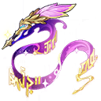

추천 광추
이 순간처럼 영원한 사랑
속도와 팀 치명타 지원
효과 자세히
키레네의 속도 조건을 맞추고 동료의 피해를 보강.
무지개가 영원히 하늘에 머물길
속도 보강
효과 자세히
속도 임계값 달성용. HP 소모 효과는 팀 생존 확인.
기억은 영원히 막을 내리지 않는다
속도와 팀 피해 증가
효과 자세히
헤르타 상점에서 중첩 가능한 대안.
추천 유물
천지를 재창조한 구세주 4 · 생명의 바커 공 2
- 머리
 주옵션HP부옵션속도 180 또는 200 · 치명타 확률 · 치명타 피해 · HP%
주옵션HP부옵션속도 180 또는 200 · 치명타 확률 · 치명타 피해 · HP% - 손
 주옵션공격력부옵션속도 180 또는 200 · 치명타 확률 · 치명타 피해 · HP%
주옵션공격력부옵션속도 180 또는 200 · 치명타 확률 · 치명타 피해 · HP% - 몸통
 주옵션HP% / 치명타 피해부옵션속도 180 또는 200 · 치명타 확률 · 치명타 피해 (주옵션 제외) · HP% (주옵션 제외)
주옵션HP% / 치명타 피해부옵션속도 180 또는 200 · 치명타 확률 · 치명타 피해 (주옵션 제외) · HP% (주옵션 제외) - 다리
 주옵션속도부옵션치명타 확률 · 치명타 피해 · HP%
주옵션속도부옵션치명타 확률 · 치명타 피해 · HP% - 구체
 주옵션HP% / 얼음 피해부옵션속도 180 또는 200 · 치명타 확률 · 치명타 피해 · HP% (주옵션 제외)
주옵션HP% / 얼음 피해부옵션속도 180 또는 200 · 치명타 확률 · 치명타 피해 · HP% (주옵션 제외) - 매듭
 주옵션HP%부옵션속도 180 또는 200 · 치명타 확률 · 치명타 피해
주옵션HP%부옵션속도 180 또는 200 · 치명타 확률 · 치명타 피해
이 조합을 추천하는 이유
정령이 유지되는 화력형. 바커 공은 속도 120에서 첫 행동을 40% 앞당긴다.
가상공간을 누비는 메신저 2 + 고행의 길에 다시 오른 사제 2 · 영원의 땅 앰포리어스 2
- 머리
 주옵션HP부옵션속도 180 또는 200 · 치명타 확률 · 치명타 피해 · HP%
주옵션HP부옵션속도 180 또는 200 · 치명타 확률 · 치명타 피해 · HP% - 손
 주옵션공격력부옵션속도 180 또는 200 · 치명타 확률 · 치명타 피해 · HP%
주옵션공격력부옵션속도 180 또는 200 · 치명타 확률 · 치명타 피해 · HP% - 몸통
 주옵션HP% / 치명타 피해부옵션속도 180 또는 200 · 치명타 확률 · 치명타 피해 (주옵션 제외) · HP% (주옵션 제외)
주옵션HP% / 치명타 피해부옵션속도 180 또는 200 · 치명타 확률 · 치명타 피해 (주옵션 제외) · HP% (주옵션 제외) - 다리
 주옵션속도부옵션치명타 확률 · 치명타 피해 · HP%
주옵션속도부옵션치명타 확률 · 치명타 피해 · HP% - 구체
 주옵션HP% / 얼음 피해부옵션속도 180 또는 200 · 치명타 확률 · 치명타 피해 · HP% (주옵션 제외)
주옵션HP% / 얼음 피해부옵션속도 180 또는 200 · 치명타 확률 · 치명타 피해 · HP% (주옵션 제외) - 매듭

주옵션HP%부옵션속도 180 또는 200 · 치명타 확률 · 치명타 피해
이 조합을 추천하는 이유
속도 2세트와 기억 정령 시너지 장신구로 충전 행동을 앞당긴다.
이 정도면 잘 키웠다
동일 파티·광추 기준 · 조건 [*]
| 스탯 | 추천 스탯 | 준종결 | 종결 |
|---|---|---|---|
| 속도 [*] 180/200은 가이드 분기. 승급 6단계 속도로 얼음 저항 관통을 늘린다. | 마을 180 | 마을 180 | 마을 200+ |
| HP [*] 정령 피해와 생존. 속도 우선. | 마을 5,000+ | 마을 5,000+ | 마을 5,000+ |
| 치명타 피해 [*] 개인 화력을 사용하는 기억 편성 참고. | 마을 100% | 마을 130% | 마을 160% |
| 치명타 확률 [*] 가이드 장비 기준. 속도·HP 우선. | 마을 50% | 마을 50% | 마을 50% |
육성 단계의 기준
Lv.80·유물 +15 기준. 입문·중간 목표는 육성 편의를 위한 단계이며, 완성값의 버프와 편성 조건은 각주를 확인.
성혼과 추천 돌파
기억 동료가 적어 첫 필살기가 늦으면 2돌을 우선 고려.
1무곡 추억 +6pt · 바운스 +12회
시의 시작점에 존재하는 공백
2전투 시작 추억 +12pt추천
스킬 버프를 받은 아군 1명당 결계 확정 피해 배율 +6%p, 최대 +24%p.
3필살기·특성 +2 · 정령 스킬 +1
해당 스킬과 대응 강화 스킬의 레벨을 올린다.
4무곡 사용당 바운스 배율 +6%
최대 24스택.
5전투 스킬 +2 · 일반 공격·정령 특성 +1
해당 스킬과 대응 강화 스킬의 레벨을 올린다.
6첫 필살기 전원 행동 게이지 +100%
무곡 최초 사용 시 방어력 −20%, 2회부터 전원 행동 게이지 +24%.
추천 파티


기본 운영과 행적
기본 운영
기억 정령 소환과 동료 행동으로 추억을 채워 첫 필살기. 이후 데미우르고스 스킬 대상을 주 딜러와 후예 효과에 맞춘다.
행적 육성 순서
기억 정령 스킬 → 전투 스킬 → 특성·필살기. 승급 4단계의 시작 추억과 6단계 속도 조건 우선.
아하 속도 계산기 →기준과 출처 · 2026-11-25
4.7 게임 데이터 · Prydwen 개별 빌드